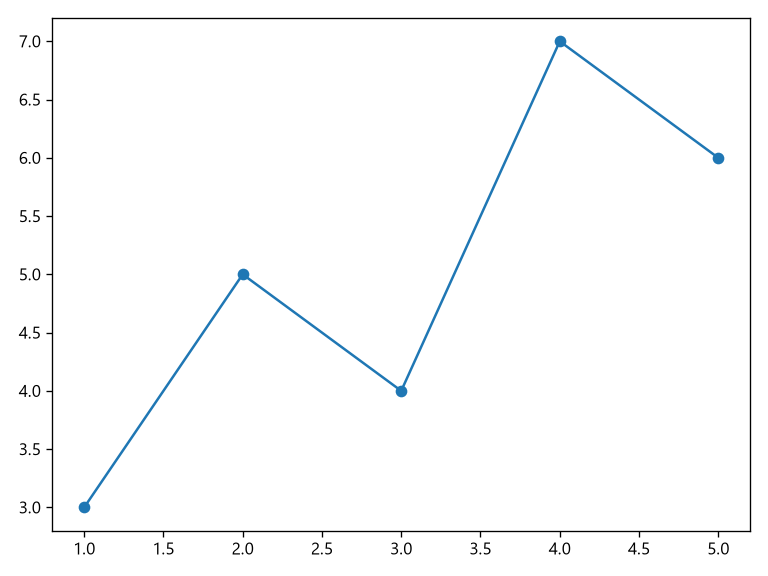
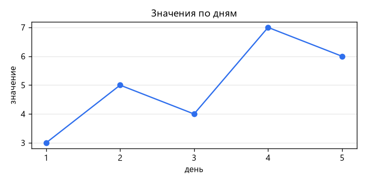
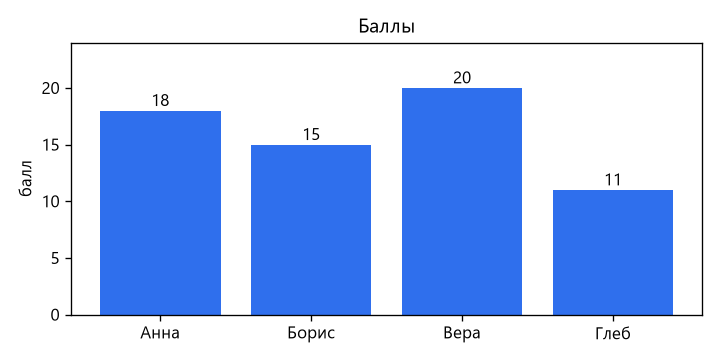
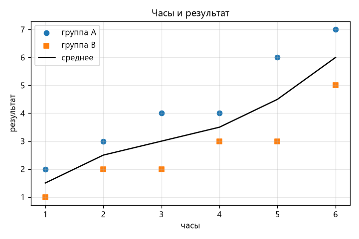
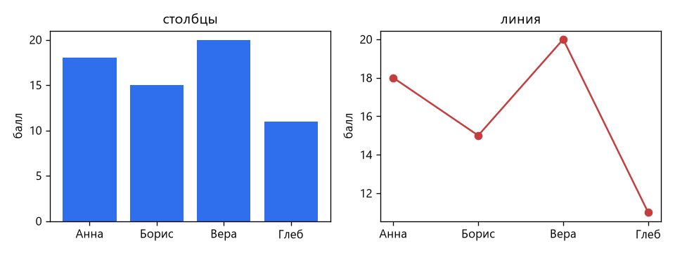

2.4 Простое рисование графиков
Цель: построить линейный график, столбчатую диаграмму и диаграмму рассеяния в matplotlib, подписать оси и сохранить рисунок в файл.
Опора: окружение .venv и ноутбуки из модуля 1. Ядро Jupyter — ./.venv/Scripts/python.exe. Рабочая папка VS Code — корень курса.
Итоговые артефакты (в папке module-2-4/):
| Файл | Назначение |
|---|---|
lab24-plots.ipynb |
Ноутбук со всеми графиками и сохранённым выводом |
figures/line.png |
Линейный график |
figures/bar.png |
Столбчатая диаграмма |
figures/scatter.png |
Диаграмма рассеяния с двумя рядами |
Подготовка
В активированном .venv установите библиотеку, если её ещё нет:
.\.venv\Scripts\Activate.ps1
python -m pip install matplotlib
Создайте ноутбук module-2-4/lab24-plots.ipynb и выберите ядро .venv. Первая ячейка — markdown: ФИО, дата, заголовок «2.4 Простое рисование графиков».
Пути к картинкам заданы от корня курса. Если Path.cwd() — папка module-2-4, уберите префикс module-2-4/ у путей к figures.
В VS Code график появляется под ячейкой после plt.show() или если ячейка заканчивается объектом рисунка. Файл на диске появляется только после savefig.
2.4.1. Первая линия
pyplot рисует на текущих осях. Точки соединяются в том порядке, в каком они перечислены.
Ячейка:
import matplotlib.pyplot as plt
from pathlib import Path
figures = Path("module-2-4") / "figures"
figures.mkdir(parents=True, exist_ok=True)
days = [1, 2, 3, 4, 5]
values = [3, 5, 4, 7, 6]
fig, ax = plt.subplots()
ax.plot(days, values)
plt.show()
subplots() возвращает фигуру и оси. Рисовать лучше на ax, а не смешивать вызовы plt.plot и ax.plot в одном рисунке.
Практика 2.4.1. Добавьте маркер точек: ax.plot(days, values, marker="o"). Выполните ячейку ещё раз.
Критерий 2.4.1: под ячейкой видна ломаная из пяти точек, папка module-2-4/figures создана.
Так выглядит линия с маркерами:

2.4.2. Подписи и сохранение
Подпись без единиц измерения на занятии не принимают: по рисунку должно быть понятно, что отложено по осям.
Ячейка:
fig, ax = plt.subplots(figsize=(6, 3))
ax.plot(days, values, marker="o", color="#2F6FED")
ax.set_title("Значения по дням")
ax.set_xlabel("день")
ax.set_ylabel("значение")
ax.set_xticks(days)
ax.grid(True, axis="y", alpha=0.3)
fig.tight_layout()
line_path = figures / "line.png"
fig.savefig(line_path, dpi=120)
plt.show()
print(line_path.resolve(), "байт:", line_path.stat().st_size)
figsize задаёт размер в дюймах. tight_layout() поджимает поля, чтобы подпись оси не обрезалась. dpi=120 задаёт чёткость файла.
Критерий 2.4.2: файл figures/line.png открывается в VS Code, на нём есть заголовок и подписи обеих осей.
Образец line.png:

2.4.3. Столбчатая диаграмма
Для категорий по горизонтальной оси удобны столбцы. Данные можно задать прямо в ноутбуке: загрузка CSV разбирается в разделе 3.1.
Ячейка:
names = ["Анна", "Борис", "Вера", "Глеб"]
scores = [18, 15, 20, 11]
fig, ax = plt.subplots(figsize=(6, 3))
ax.bar(names, scores, color="#2F6FED")
ax.set_title("Баллы")
ax.set_ylabel("балл")
ax.set_ylim(0, 24)
fig.tight_layout()
bar_path = figures / "bar.png"
fig.savefig(bar_path, dpi=120)
plt.show()
set_ylim оставляет запас над самым высоким столбцом, иначе подпись значения легко упирается в край.
Практика 2.4.3. Над каждым столбцом подпишите балл. Координата по вертикали — сам балл, по горизонтали — позиция столбца.
fig, ax = plt.subplots(figsize=(6, 3))
bars = ax.bar(names, scores, color="#2F6FED")
ax.set_title("Баллы")
ax.set_ylabel("балл")
ax.set_ylim(0, 24)
for bar, score in zip(bars, scores):
ax.text(bar.get_x() + bar.get_width() / 2, score + 0.4, str(score), ha="center")
fig.tight_layout()
fig.savefig(bar_path, dpi=120)
plt.show()
Критерий 2.4.3: на bar.png четыре столбца, подписи — имена, над столбцами числа 18, 15, 20 и 11.
Образец bar.png:

2.4.4. Рассеяние и легенда
Диаграмма рассеяния показывает пары чисел без линии между ними. Два ряда на одних осях различают цветом и подписью в легенде.
Ячейка:
hours = [1, 2, 3, 4, 5, 6]
group_a = [2, 3, 4, 4, 6, 7]
group_b = [1, 2, 2, 3, 3, 5]
fig, ax = plt.subplots(figsize=(6, 4))
ax.scatter(hours, group_a, label="группа A")
ax.scatter(hours, group_b, label="группа B", marker="s")
ax.set_title("Часы и результат")
ax.set_xlabel("часы")
ax.set_ylabel("результат")
ax.legend()
ax.grid(True, alpha=0.3)
fig.tight_layout()
scatter_path = figures / "scatter.png"
fig.savefig(scatter_path, dpi=120)
plt.show()
Аргумент label сам по себе текст на рисунок не выводит. Его показывает ax.legend().
Практика 2.4.4. Добавьте на те же оси линию среднего ряда: для каждого часа среднее групп A и B. У линии должна быть подпись «среднее». Сохраните файл ещё раз.
mean_row = [(a + b) / 2 for a, b in zip(group_a, group_b)]
ax.plot(hours, mean_row, color="black", label="среднее")
ax.legend()
fig.savefig(scatter_path, dpi=120)
plt.show()
Эту ячейку выполняйте после ячейки с scatter, не перезапуская ядро между ними: переменные ax и fig должны остаться в памяти. Надёжнее вставить plot в ту же ячейку перед savefig.
Критерий 2.4.4: на рисунке две серии точек и чёрная линия, в легенде три подписи.
Образец scatter.png:

2.4.5. Два графика на одной фигуре
subplots(1, 2) создаёт одну фигуру и два набора осей рядом. Так сравнивают одни и те же баллы столбцами и линией.
Ячейка:
fig, axes = plt.subplots(1, 2, figsize=(8, 3))
axes[0].bar(names, scores, color="#2F6FED")
axes[0].set_title("столбцы")
axes[1].plot(names, scores, marker="o", color="#C43E3E")
axes[1].set_title("линия")
for axis in axes:
axis.set_ylabel("балл")
fig.tight_layout()
fig.savefig(figures / "pair.png", dpi=120)
plt.show()
Практика 2.4.5. В markdown одним предложением ответьте, какой из двух графиков уместнее для имён людей и почему линия между «Анной» и «Борисом» может ввести в заблуждение.
Критерий 2.4.5: файл figures/pair.png содержит два рисунка с заголовками «столбцы» и «линия».
Образец pair.png:

2.4.6. Самопроверка
В конце ноутбука ответьте в markdown:
- Зачем вызывать
savefig, если график уже виден под ячейкой. - Чем
ax.barотличается отax.plotдля списка имён. - Почему подпись ряда не появляется, пока не вызван
legend.
Чеклист
| № | Действие | Готово |
|---|---|---|
| 1 | Установлен matplotlib, ядро ноутбука — .venv |
☐ |
| 2 | figures/line.png с подписями осей |
☐ |
| 3 | figures/bar.png: четыре столбца и числа над ними |
☐ |
| 4 | figures/scatter.png: две серии и линия среднего, легенда на месте |
☐ |
| 5 | figures/pair.png: столбцы и линия рядом |
☐ |
| 6 | Три ответа самопроверки | ☐ |
Типовые ошибки
| Симптом | Что проверить |
|---|---|
No module named matplotlib |
python -m pip install matplotlib в .venv, ядро ноутбука переключено на этот интерпретатор |
| Под ячейкой пусто | В ячейке есть plt.show() и числа в списках не пустые |
| Подпись оси обрезана | Перед savefig вызван fig.tight_layout() |
| В легенде нет подписи | У ряда указан label, затем вызван ax.legend() |
Картинка сохранилась не в module-2-4/figures |
Сверить Path.cwd() с префиксом пути |
| Кириллица на графике квадратиками | Шрифт matplotlib не содержит кириллицу; для занятия достаточно подписей, которые уже отображаются в VS Code. Если квадратики есть, задайте шрифт: plt.rcParams["font.family"] = "Segoe UI" и выполните ячейку снова |
После занятия слушатель строит три типа графика по спискам чисел, подписывает оси и сохраняет рисунок в PNG.